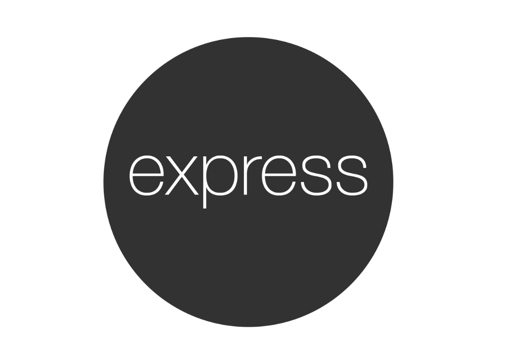

<div class="total" id="home" [@enterState]>
    <section class="content-home">
        <h1 id="title">¡Bienvenido!</h1>
        <p id="short-text">
            ¡Hola! mi nombre es Facundo Gamond y soy programador web. En este espacio comparto algunos de mis desarrollos
            personales y proyectos en los cuales participé.
        <p>
            Soy un desarrollador autodidacta de categoría aún "junior", pero con muchas ansias de acumular nuevas
            experiencias y aprendizajes que impulsen mi avance en esta profesión que tanto me apasiona.
        </p>

        <div id="home-float">
            <br>
            <br>
            <h3>Habilidades</h3>
            <br>
            <section id="tech">
                <h3>Tecnologias</h3>
                <p>
                    <ion-icon name="logo-html5" style="color:orangered"></ion-icon> Html
                </p>
                <p>
                    <ion-icon style="color:lightblue" name="logo-css3"></ion-icon> Css
                </p>
                <p>
                    <ion-icon name="logo-sass" style="color: palevioletred"></ion-icon> Sass
                </p>
                <p>
                    <ion-icon name="logo-angular" style="color:rgb(218, 0, 0)"></ion-icon> Angular
                </p>
                <p>
                    <ion-icon name="logo-nodejs" style="color:greenyellow"></ion-icon> Node
                </p>
                <p> Express</p>
                <p> MongoDb</p>

            </section>

            <section id="soft">
                <h3>Sistemas</h3>
                <p>
                    <ion-icon name="logo-tux"></ion-icon> Linux
                </p>
                <p>
                    <ion-icon name="logo-windows" style="color:#2271b3"></ion-icon> Windows
                </p>
                <p></p>
            </section>
            <div class="clearfix"></div>
        </div>
    </section>
</div>